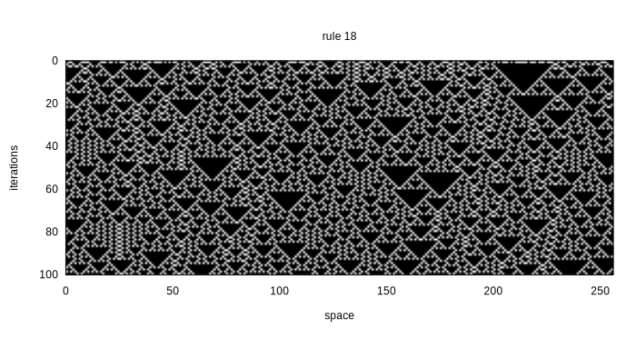
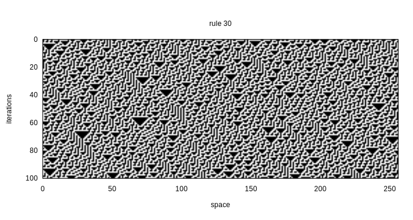
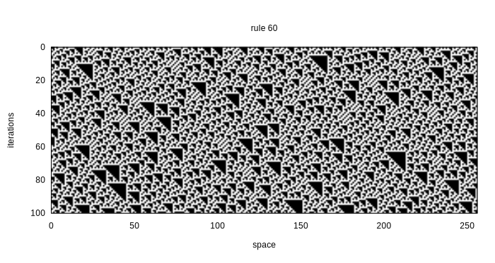
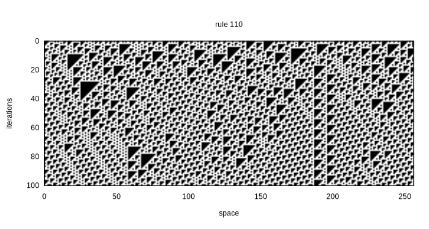
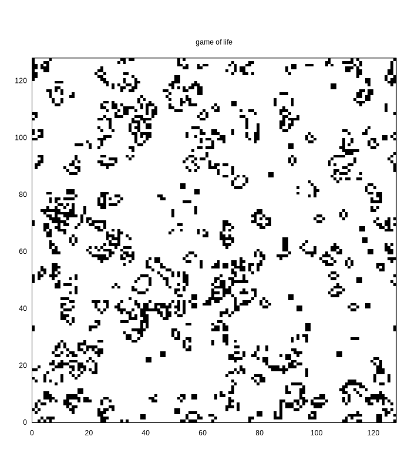
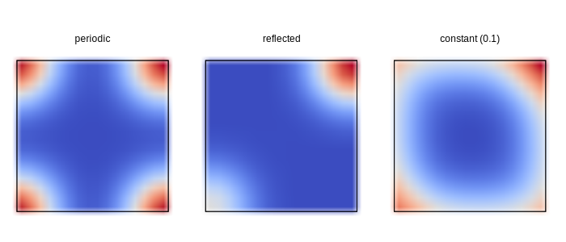

Stencil operations
A stencil is the common term for computing many-to-one operations on grids. Examples of applications are:
- Finite difference schemes
- Finite Impulse Response (FIR) filters
- Convolutions (encompassing the previous two)
- Cellular Automata
Note that for larger convolution kernels, it is often more efficient to perform convolutions in the Fourier domain. On the matter of performance: stencil operations are the textbook example for computations that perform really well on GPUs.
Boundary types
One thing to be mindful of is the treatment of box boundaries. I define three traits here. These are types that are defined with the single goal of using the dispatch mechanism in Julia to select the right methods for us. Boundaries can be periodic, reflective or constant to some value.
abstract type Boundary{dim} end
struct Reflected{dim} <: Boundary{dim} end
struct Periodic{dim} <: Boundary{dim} end
struct Constant{dim, value} <: Boundary{dim} endNow we can use these traits to define three methods for indexing on an offset from some index that is assumed to be within bounds.
@testset "offset_value" begin
@test CartesianIndex(1, 1) == offset_index(Reflected{2}, (3, 3), CartesianIndex(1, 1), CartesianIndex(0, 0))
endfunction offset_index(::Type{Periodic{dim}}, shape::NTuple{dim,Int}, i::CartesianIndex, Δi::CartesianIndex) where {dim}
CartesianIndex(mod1.(Tuple(i + Δi), shape)...)
end
function offset_index(::Type{Reflected{dim}}, shape::NTuple{dim, Int}, i::CartesianIndex, Δi::CartesianIndex) where {dim}
clip(i, a, b) = (i < a ? a + a - i : (i > b ? b + b - i : i))
CartesianIndex(clip.(Tuple(i + Δi), ones(Int, dim), shape)...)
end
function offset_index(::Type{Constant{dim, value}}, shape::NTuple{dim, Int}, i::CartesianIndex, Δi::CartesianIndex) where {dim, value}
j = i + Δi
all(checkindex.(Bool, range.(1, shape), Tuple(j))) ? j : nothing
end
function offset_value(BT::Type{B}, z::AbstractArray, i::CartesianIndex, Δi::CartesianIndex) where {dim, B <: Boundary{dim}}
z[offset_index(BT, size(z), i, Δi)]
end
function offset_value(::Type{Constant{dim, value}}, z::AbstractArray, i::CartesianIndex, Δi::CartesianIndex) where {dim, value}
j = i + Δi
(checkbounds(Bool, z, j) ? z[j] : value)
endStencil implementation
Using these helper functions we can now define a stencil operation. Given the boundary trait, a stencil size and a response function, we can transform an array to a next generation.
function stencil(::Type{T}, ::Type{BT}, n::NTuple{dim,Int}, f::Function) where {T, dim, BT <: Boundary{dim}}
m = n .÷ 2
stencil_shape = range.(.-m, m)
stencil = zeros(T, n)
function(z_in::AbstractArray{T, dim}, z_out::AbstractArray{T, dim}, args...)
@assert (size(z_in) == size(z_out)) "sizes of arrays need to be equal"
shape = size(z_in)
for i in CartesianIndices(shape)
for (k, Δi) in enumerate(CartesianIndices(stencil_shape))
stencil[k] = offset_value(BT, z_in, i, Δi)
end
z_out[i] = f(stencil, args...)
end
end
end
function convolution(::Type{B}, kernel::Array{T, dim}) where { dim, T, B <: Boundary{dim} }
stencil(T, B, size(kernel), s -> sum(s .* kernel))
endMore efficient implementations are imaginable. For instance we could
use normal unchecked indexing for most of the array, and only use the
offset_value function when we really need it. Another
optimisation could be to generate parts of the inner loop, and/or do the
outer loop in parallel.
We will now test this function first on an Elementary CA (ECA), Conway’s Game of Life, and a convolution.
Stencil module
module Stencil
export Boundary, Reflected, Periodic, Constant, stencil, convolution, offset_index, offset_value
<<boundary-trait>>
<<offset-indexing>>
<<stencil-operation>>
endElementary Cellular Automata
An Elementary Cellular Automata is a one-dimensional CA with two states. Every next generation depends on the direct neighbourhood of three cells. Since there are \(2^3 = 8\) patterns and two outcomes for every pattern, there are \(2^8 = 256\) possible ECA.
using MindTheGap.Stencil
using GnuplotLite
rule(i::Int) = function (x::AbstractVector{T}) where T <: Integer
d = x[1]*4 + x[2]*2 + x[3]
i & (1 << d) == 0 ? 0 : 1
end
function eca(r::Int, n::Int, iter::Int)
y = Array{Int}(undef, n, iter)
y[:, 1] = rand(0:1, n)
stencil_op = stencil(Int, Periodic{1}, (3,), rule(r))
for i in 2:iter
stencil_op(view(y, :, i-1), view(y, :, i))
end
y
end
<<eca-plot>>



Even these one-dimensional CA show highly complex behaviour. For instance, it has been shown that rule 110 is Turing complete.
Plotting code
function plot_eca(output::String, r::Int, n::Int, iter::Int)
plot_width = 700
plot_height = plot_width * iter ÷ n + 100
gnuplot() do g
g |>
send("set term svg size $(plot_width), $(plot_height)") |>
send("set output '$(output)'") |>
send("data" => (x=0:n-1, y=0:iter-1, z=eca(r, n, iter)')) |>
send("set title 'rule $(r)'") |>
send("set xrange [0:$(n)]; set yrange [$(iter):0] reverse") |>
send("set xlabel 'space'") |>
send("set ylabel 'iterations'") |>
send("set size ratio -1") |>
send("unset colorbox; set palette gray") |>
send("plot \$data nonuniform matrix u (\$1+0.5):(\$2+0.5):3 with image")
end
end.RECIPEPREFIX = >
.PHONY: all
fig := docs/fig
all: $(fig)/rule18.svg $(fig)/rule30.svg $(fig)/rule60.svg $(fig)/rule110.svg
$(fig)/rule%.svg: src/examples/eca.jl
> @mkdir -p $(@D)
> julia --project=. -e 'include("./src/examples/eca.jl"); plot_eca("$@", $(*F), 256, 100)'Game of Life
Perhaps the most famous CA is Conway’s Game of Life. This is a two-dimensional two-state (dead/alive) CA, with the following rules: a cell is alive in the next generation if it is alive and has two neighbours or if it has three neighbours; in all other cases the cell is dead.
"x is a 3x3 region around the cell at x[2,2]."
rules(x) = let c = x[2, 2], s = sum(x) - c
c && s == 2 || s == 3
endusing MindTheGap.Stencil
using GnuplotLite
function game_of_life(w, h)
y1 = rand(Bool, (w, h))
y2 = Array{Bool}(undef, w, h)
<<game-of-life-rules>>
op = stencil(Bool, Periodic{2}, (3, 3), rules)
Channel() do ch
put!(ch, y1)
while true
op(y1, y2)
(y1, y2) = (y2, y1)
put!(ch, y1)
end
end
end
<<life-plot>>
Plotting code
function plot_life(output::String, w::Int, h::Int)
(z, _) = Iterators.peel(Iterators.drop(game_of_life(w, h), 50))
plot_width = 700
plot_height = plot_width * h ÷ w + 100
gnuplot() do g
g |>
send("set term svg size $(plot_width), $(plot_height)") |>
send("set output '$(output)'") |>
send("data" => Matrix{Int}(z')) |>
send("set title 'game of life'") |>
send("set xrange [0:$(w)]; set yrange [0:$(h)]") |>
send("set size ratio -1") |>
send("unset colorbox; set palette gray negative") |>
send("plot \$data matrix u (\$1+0.5):(\$2+0.5):3 with image pixels")
end
end.RECIPEPREFIX = >
docs/fig/game-of-life.svg: src/examples/game-of-life.jl
> @mkdir -p $(@D)
> julia --project=. -e 'include("$<"); plot_life("$@", 128, 128)'Testing boundaries with a convolution
To test the different boundary types, lets try the following setup. We take a 16x16 image with all zeros except the bottom left gets a value of 1 and the top right pixel gets a value of 2. Now convolve with a Gaussian and see what happens. For the constant boundary, I’ve set the value to 0.1, to see the effect.

Notice, that for the periodic boundaries, the bottom left and top right are neighbouring. So there the two pixels appear as a single peak. In the reflected case we see a clear distinction between the two corners.
Source code for plotting boundary types
using MindTheGap.Stencil
using GnuplotLite
function plot_boundary_types(output::String)
n = 16
y0 = zeros(Float64, n, n)
y0[1, 1] = 1
y0[n, n] = 2
x = collect(-2:0.25:2)
k = exp.(-(x.^2 .+ x'.^2))
k ./= sum(k)
y_periodic = Array{Float64}(undef, n, n)
convolution(Periodic{2}, k)(y0, y_periodic)
y_reflected = Array{Float64}(undef, n, n)
convolution(Reflected{2}, k)(y0, y_reflected)
y_constant = Array{Float64}(undef, n, n)
convolution(Constant{2, 0.1}, k)(y0, y_constant)
gnuplot() do g
g |>
send("load 'data/moreland.pal'") |>
send("periodic" => y_periodic) |>
send("reflected" => y_reflected) |>
send("constant" => y_constant) |>
send("set term svg size 700, 300") |>
send("set output '$(output)'") |>
send("set multiplot layout 1, 3") |>
send("set size square") |>
send("set xrange [0:$(n)]; set yrange [0:$(n)]") |>
send("unset colorbox") |>
# send("set colorbox horiz user origin graph 0,screen .04 size graph 1,screen .04") |>
send("unset xtics; unset ytics") |>
send("set title 'periodic'") |>
send("plot \$periodic matrix u (\$1+0.5):(\$2+0.5):3 t'' w image") |>
send("set title 'reflected'") |>
send("plot \$reflected matrix u (\$1+0.5):(\$2+0.5):3 t'' w image") |>
send("set title 'constant (0.1)'") |>
send("plot \$constant matrix u (\$1+0.5):(\$2+0.5):3 t'' w image") |>
send("unset multiplot")
end
end.RECIPEPREFIX = >
docs/fig/boundary_types.svg: src/examples/convolution.jl
> @mkdir -p $(@D)
> julia --project=. -e 'include("$<"); plot_boundary_types("$@")'